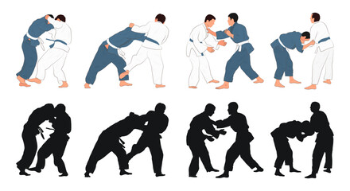
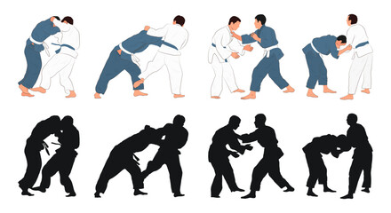
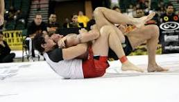

Jui-Jitsu com Pano.
Uma arte onde os alunos(a),aprendem técnicas de imobilizações e quedas Com total segurança

Disciplina e respeito em primeiro lugar!
Uma arte onde os alunos(a),aprendem técnicas de imobilizações e quedas Com total segurança
O jiu-Jitsu sem kimono é conhecido como NO GI ou Submission.
No Gi é um termo em inglês que significa "sem kimono" e a luta se concentra em técnicas de finalização,
exigindo que os praticantes usem pegadas no corpo do oponente, e não no tecido da roupa.
